ИЗДАНИЕ 22
МЕТОДИКА № 1
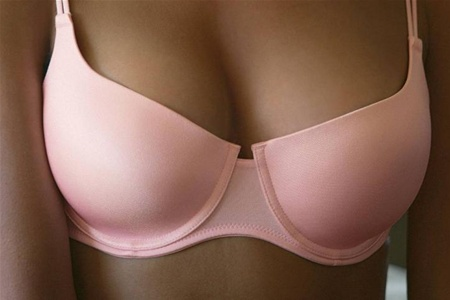
Из всех частей тела женщины именно грудь является воплощением женственности и грации. В связи с этим многие девушки и женщины жалуются, что у них маленькая грудь. Однако окружность бюста, а также его упругость, можно увеличить. Чтобы этого достичь, надо:
1. Улучшить осанку (сутулость способствует обвисанию
грудей).
2. Молочные железы расположены на большой и малой
грудных мышцах, поэтому для увеличения бюста надо с по
мощью физических упражнений увеличить объем грудных
мышц.
Занятия, направленные на увеличение массы грудных мышц, необходимо проводить не менее чем 3-4 раза в неделю. Тренировки продолжаются от 4 до 8 недель. За это время окружность бюста увеличится на 4-6 см.
Кроме описываемых упражнений рекомендуется постоянно делать растирание, массаж; полезны регулярные прогулки на воздухе и не менее чем восьмичасовой сон.
Упражнение 1
Исходное положение - стоя. В руках - небольшая тяжесть (книга). Руки поднимают вверх, делая два хлопка. При подъеме рук вверх - вдох, при опускании - выдох.
Повторить 4-12 раз.
Упражнение 2
Исходное положение - лежа на спине. В руках - книги или мешочки с песком. Руки разводят в стороны на уровне плеч, затем 2 раза перекрещивают, держа перед грудью, и поднимают косо вверх над грудью резким движением.
Повторить 4-12 раз. Дыхание свободное.
Упражнение 3
Исходное положение - лежа на спине. В руках - гиря, мешочек с песком или другая тяжесть. Руки закинуты за голову. Руки поднимают над головой и опускают к животу. При подъеме рук - вдох, при возвращении в исходное положение - выдох.
Повторить 5-10 раз.
Упражнение 4
Исходное положение - сидя. Руки согнуты в локтях и подняты на уровне плеч. На локти положены мешочки с песком или другая равноценная тяжесть. В таком положении локти сводят и разводят. Дыхание свободное.
Повторить 5-10 раз.
Упражнение 5
Исходное положение - сидя. Подбородок опирается на руки. При надавливании подбородком вниз руки оказывают сопротивление. Это упражнение способствует развитию нагрудных и шейных мышц.
Упражнение 6
Исходное положение - стоя. За спиной растягивают резинку или эспандер. Дыхание свободное.
Повторить 4-12 раз.
Упражнение 7
Исходное положение - стоя. Упражнение делают возле стены, стола или стула. Ладони ставят на сиденье стула на ширину плеч. Сгибая руки, стараются непременно коснутьcя подбородком стены или стула. Разгибая руки в локтях, грудь и голову отводят назад. Ноги ставят в 60-70 см отточки опоры. Живот и талию не прогибать вперед; двигаются только голова и грудь. Сгибая руки - вдох, разгибая - выдох.
Повторить 4-12 раз.
Упражнение 8
Исходное положение - ладонно-коленная поза. Сгибая локти, стараются коснуться грудью пола.
Повторить 4-12 раз.
Выполняйте описанный комплекс упражнений до тех пор, пока не достигните желаемого результата.
МЕТОДИКА № 2
Бюст у женщины увеличивается, как известно, в период беременности и полового созревания. Воздействуя на определенные точки тела по японской методике надавливания пальцем ШИАЦУ и используя водные процедуры, массаж, в организме женщины искусственно вызываются процессы, аналогичные периоду беременности и полового созревания. Итак, приступим?
" Встаньте прямо, ноги вместе, руки на поясе. Ритмично поднимайтесь на носки и одновременно старайтесь свести локти за спиной как можно ближе друг к другу. Проделать это упражнение надо более 30 раз (вдох носом, выдох ртом). После этого выполняйте массаж точек симпу и итю (рис. 1а) в течение 3-4 минут.
* Встаньте прямо, на уровне груди прямыми руками перед собой с силой сожмите резиновый мяч на несколько секунд 15-20 раз. Для быстрого результата комплекс повторяют 2-3 раза в день.
Надавливание подушечкой большого или указательного пальца на точки эндокринной системы стимулирует выработку гормонов, влияющих как на размеры груди, так и на состояние кожи, сохранение фигуры. Еще более 4 тыс. лет назад наложницы гаремов использовали эти приемы и длительное время сохраняли свежий вид и привлекательность.
Надавливание на точки щитовидной железы (рис. 1). Наклоните шею слегка вперед, надавливайте по 5 раз в течение двух секунд на каждую точку. Повторите слева и справа по 3 раза. Это воздействие предотвращает также раннее поседение волос.
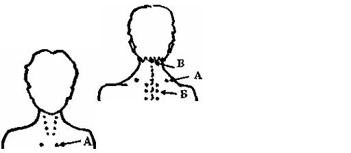
Рис. 2
Рис. 1
Надавливание на точку продолговатого мозга (рис. 2в). Положите подушечку среднего пальца любой руки на точку, сверху положите палец другой руки и надавите 8-10 раз со средней силой, с паузами 2-3 сек.
Плечевой пояс (рис. 2а). Положите подушечки пальцев разноименных рук (руки скрестить) на точки "а" и выполните 8-10 надавливаний с паузами 5-7 сек. То же для точек "б" (рис. 26). После этого сделайте разминающий массаж груди мягкими движениями ладоней по и против часовой стрелки в течение 3-5 мин.
После упражнений облейте грудь холодной водой в течение 1-2 мин (душем снизу вверх). Вечером сделайте контрастный компресс. Возьмите 2 миски: с горячей водой (добавьте немного уксуса или лимонного сока) и с холодной водой. На 30 сек горячий компресс снизу груди, затем на 1 мин - холодный. Поочередно 10 раз. Закончите холодным. После этих процедур натрите грудь следующим составом: 1 ст. ложка розмарина на 1 литр воды (вскипятить, остудить, процедить), добавить 1 ст. ложку соли и спирта и 2 ст. ложки лимонного сока или уксуса. Противопоказаны втирания при тонкой коже.
Неправильная осанка, сутулость ухудшает форму бюста. Для красивой осанки и груди дома походите с гордым видом 5-7 мин с толстой книгой на голове. Старайтесь запомнить ощущения и в повседневной жизни ходите так, как будто у вас на голове груз.
Питать кожу груди так же необходимо, как и кожу лица. Раз в неделю после купания осторожно вотрите в бюст увлажняющий или жирный крем, после чего сделайте теплый компресс из махрового полотенца Через 15 мин ополосните грудь холодной водой.
МЕТОДИКА № 3
Упражнения для формирования грудных мышц
Приведенные упражнения способствуют укреплению дряблой мускулатуры груди после похудения или кормления грудью.
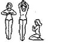
1. Стоя, ноги вместе, сложить руки перед грудью, ладони соединить. Поочередно поднимать и опускать руки с интенсивным давлением ладоней друг на друга. Затем руки расслабить, упражнение повторить. Проделать то же самое, сидя на пятках.
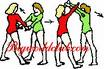
2. Парное упражнение. Стоя, ноги врозь, руки вытянуты вперед, пытаться развести руки сопротивляющейся партнерши. Проделать то же самое с поднятыми руками с попыткой их опустить. Руки вдоль тела, расслабиться
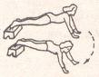
3. Лежа на животе, положите ноги на
возвышение, упор на руки. Перебирать
вытянутыми руками четверть круга впра
во, влево.
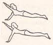
4. Упор руками в поло
жении лежа, поочередно поднимать правую
и левую руки.
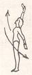
5. Стоя, ноги вместе, взять кни
ги в опущенные руки. Правую руку
поднять, левую назад и снаружи, махом поменять положение рук.
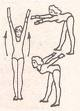
6. Стоя, ноги вместе, взять груз
в опущенные руки. Махом назад
поднять руки, наклон вперед, мах
руками за спину.
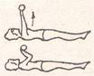
7. Лежа на спине, взять в
руки груз (гантели), руки
вперед. Сгибать и разги
бать руки.
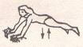
8. Ноги вместе, взяться руками за два стула, выжиматься и
опускаться как можно ниже, тело вытянуто.
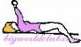
9. Лежа на спине на скамейке, стопы на полу, голова на конце скамейки,
в обеих руках груз, поднять его прямо
перед грудью, затем опустить как мож
но дальше за головой, руки вытянуты.
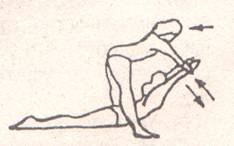
10. Парное упражнение. Одна партнерша лежит на животе, ладони повернуты вниз, прогнуться назад. Другая, разведя ноги, стоит над спиной первой и берет ее за руки. Первая тянет руки вниз, вторая сопротивляется.
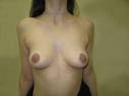
Часто грудь деформируется после рождения и кормления ребенка. Чтобы это не произошло, во время беременности и кормления ребенка круглосуточно носите бюстгальтер из плотной ткани, а после окончания кормления - первое время перебинтовывайте грудь эластичным бинтом.
Для этого приготовьте полуметровую полоску марли или полотна и смочите ее в соке свежих огурцов, воде с винным уксусом или с добавлением лимонного сока и наложите на грудь. После этого перебинтовывайте эластичным бинтом - 2 раза вокруг туловища под грудью, потом бинт проводится от левой руки накрест через правое плечо и вокруг шеи. далее через левое плечо накрест под правую грудь. Такой перекрест делается дважды и конец бинта крепится лейкопластырем. Компресс держат 2-3 часа 2 раза в неделю на протяжении 6 недель, затем раз в неделю. 2 раза в месяц и один раз в месяц. Курс лечения рассчитан на 6 месяцев.
Лучше если вам кто-нибудь поможет, потому что самой трудно наложить повязку правильно.
НЕСКОЛЬКО СЛОВ О ВАКУУМНОЙ МЕТОДИКЕ УВЕЛИЧЕНИЯ ГРУДИ
В 1982 г. доктор Л. Фотина разработала способ коррекции молочных желез путем воздействия на них отрицательным локальным воздействием. Для этого груди помещаются в минибарокамеры, соединенные с разрежающим насосом. Пониженное давление вызывает усиление прилива крови к молочным железам, улучшение доставки кислорода и питательных веществ, повышение обмена веществ в области груди и, как следствие, увеличение ее объема.
Сеансы по 15-20 мин проводятся во вторую фазу месячного цикла за 10 дней до начала менструации. Весь курс
продолжается 3 месяца (30 сеансов).
Способ наиболее эффективен для женщин в возрасте 18-35 лет, когда грудь увеличивается на 1-2 размера. Начинать увеличивать грудь раньше нецелесообразно, так как молочные железы еще растут. После 35 лет эффективность метода значительно снижается. В этом случае грудь увеличивать следует с помощью специальных упражнений.
Противопоказания к применению вакуумного метода: наличие любых уплотнений в молочных железах, опухоли различной локализации, наличие любых острых или обострение гинекологических заболеваний, острые лихорадочные заболевания, также сахарный диабет, туберкулез, язва и другие тяжелые заболевания.
Уникальные издания.